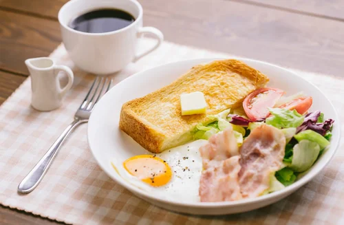
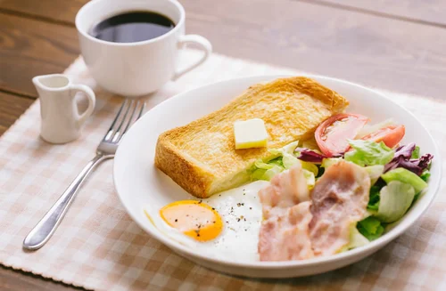

空いている店が見つからない
打合せの前後で作業したいのに、近場に入れる店が見つからず、毎回歩き回る…


 

現在地から “すぐ入れるカフェ” が検索でき、
混雑状況・電源・Wi-Fi の有無を瞬時に確認できるサービスです。
打合せの前後で作業したいのに、近場に入れる店が見つからず、毎回歩き回る…
PC作業が必要なのに、電源があるか事前にわからず、賭けで入店することに…
作業場所の確保が日によってバラバラで、ルーティン化できず集中しにくい…
現在地から近くて空いているカフェだけを優先表示。無駄な移動がゼロに。
PC作業の可否が事前に分かるため、会議前の“電源難民”が完全解消。
安定して使える店が増えるため、毎日の作業時間を確保しやすくなります。
今いる場所から近いカフェを優先的に表示。

空席状況が色分け表示され、店選びが直感的。
PC作業に必須の情報を一覧で確認可能。